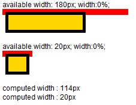

RD8022: 各浏览器中宽度为 0% 的 IMG 元素的包含块的 shrink-to-fit 算法存在差异
标准参考
shrink-to-fit 可以理解为 "收缩至合适" ，代表了浏览器对于计算后宽度为 'auto' 时的非替换浮动元素宽度计算所要遵循的标准。此外除了非替换浮动元素，对非替换绝对定位元素、非替换行内块元素的宽度为 auto 时也遵循此计算方式。
根据 W3C CSS2.1 规范中的描述，shrink-to-fit 的宽度计算方法与 'table-layout' 特性为 'auto'（即自动表格布局）时对于单元格的宽度计算方法类似。大致为：
- 计算格式化内容时除了发生明确的换行外不发生换行的时首选宽度 (preferred width) ，以及首选最小宽度 (preferred minimum width) ，比如，尝试所有可能的换行。而 CSS2.1 没有定义精确的算法。
- 其次，在这种情况下，找出可用宽度（available width），这个宽度为包含块减去 'margin-left'、'border-left-width'、'padding-left'、'padding-right'、'border-right-width'、'margin-right'以及所有相关滚动条的宽度。
综上所述：
shrink-to-fit 的宽度 = min ( max (首选最小宽度, 可用宽度) , 首选宽度)
关于 shrink-to-fit 的更多资料，请参考 CSS2.1 规范 10.3.5 Floating, non-replaced elements 中的内容。
问题描述
对于宽度为 0% 的 IMG 元素的包含块的 shrink-to-fit 算法，Firefox Chrome Safari 与 IE6 IE7 IE8 Opera 存在差异。
造成的影响
当宽度为 0% 的 IMG 元素的包含块的宽度由 shrink-to-fit 算法决定的时候，各浏览器中的显示效果可能存在差异，严重的情况下会造成局部布局混乱。
受影响的浏览器
| 所有浏览器 |
|---|
问题分析
该问题的根本原因在于包含 'width : 0%' 的 IMG 元素的包含块使用 shrink-to-fit 算法计算宽度的时候各浏览器取的首选宽度 (preferred width) 不同。
分析以下代码：
<html>
<head></head>
<body>
available width: 180px; width:0%;
<div style="width:200px;background:red;padding:5px;">
<div id="stf1" style="float:left;border:5px solid;padding:5px;background:gold;">
<img src="google_small.gif" style="width:0%;" />
</div>
</div>
<br/><br/><br/>
available width: 20px; width:0%;
<div style="width:40px;background:red;padding:5px;">
<div id="stf2" style="float:left;border:5px solid;padding:5px;background:gold;">
<img src="google_small.gif" style="width:0%;" />
</div>
</div>
<br/><br/><br/>
<div id="info"></div>
<script type="text/javascript">
window.onload = function(){
var $ = function(id){return document.getElementById(id);};
function info(msg){
$("info").innerHTML += "computed width : " + msg + "px<br />";
}
var cs1 = window.getComputedStyle ? window.getComputedStyle($("stf1"),null) : $("stf1").currentStyle,
cs2 = window.getComputedStyle ? window.getComputedStyle($("stf2"),null) : $("stf2").currentStyle;
info($("stf1").offsetWidth - parseInt(cs1.paddingLeft) - parseInt(cs1.paddingRight) - parseInt(cs1.borderLeftWidth) - parseInt(cs1.borderRightWidth));
info($("stf2").offsetWidth - parseInt(cs2.paddingLeft) - parseInt(cs2.paddingRight) - parseInt(cs2.borderLeftWidth) - parseInt(cs2.borderRightWidth));
}
</script>
</body>
</html>
上述代码中需要使用 shrink-to-fit 计算宽度的元素是 DIV[id="stf1"] 和 DIV[id="stf2"] (以下简称 "stf1" 和 "stf2") 。 参考以上代码我们首先可以确定它们各自的可用宽度 (available width) 为 180px 和 20px， 而图片 "google_small.gif" 内在宽度为 114px，分别小于和大于 "stf1" 和 "stf2" shrink-to-fit 算法的可用宽度。 通过对比两者的渲染结果和宽度的计算值，我们基本可以得出各浏览器对于 "stf1" 和 "stf2" 不同的 shrink-to-fit 算法。
各浏览器中表现如下：1
| IE6 IE7 IE8 Opera | Firefox Chrome Safari |
|---|---|
 |
 |
注1：这里忽略一些不相干的问题的影响，比如 IE6 IE7 IE8(Q) 中浮动元素会影响其 hasLayout 的包含块高度的计算。
根据测试结果，我们猜测在各浏览器中 'stf1' 和 'stf2' 的计算公式为：
| shrink-to-fit Element | IE6 IE7 IE8 Opera | Firefox Chrome Safari |
|---|---|---|
| stf1 | 0px = min (max (0px, 180px), 0px) | 114px = min (max (0px, 180px), 114px) |
| stf2 | 0px = min (max (0px, 20px), 0px) | 20px = min (max (0px, 20px), 114px) |
即 IE6 IE7 IE8 Opera 中宽度为 0% 的 IMG 元素的包含块宽度 'shrink-to-fit' 算法中首选宽度总为0， 而在 Firefox Chrome Safari 中首选宽度为图片内在宽度。
进一步可以推测出，当使用宽度为 0% 的 IMG 元素参与计算 'shrink-to-fit' 的首选宽度时，IE6 IE7 IE8 Opera 会先将 IMG 元素的宽度计算为 0， 再计算其包含块的宽度；而其它浏览器则先使用 IMG 元素的内在宽度计算包含块的宽度，再计算 0% 的 IMG 元素的宽度。
解决方案
尽量避免设置 IMG 元素的宽度为 0%，可以用 0px 替代。
参见
知识库
相关问题
测试环境
| 操作系统版本: | Windows 7 Ultimate build 7600 |
|---|---|
| 浏览器版本: |
IE6 IE7 IE8 Firefox 3.6.10 Chrome 7.0.524.0 dev Safari 5.0.2 Opera 10.62 |
| 测试页面: | IMG_width_0percent.html |
| 本文更新时间: | 2010-09-19 |
关键字
shrink-to-fit IMG width percent